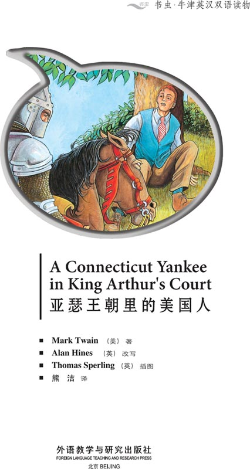
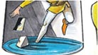

扉页

Copyright
Copyright © Foreign Language Teaching and Research Press 2006
All rights reserved. No part of this publication may be reproduced or distributed by any means, or stored in a database or retrieval system, without the prior written permission of Foreign Language Teaching and Research Press.
本书版权由外语教学与研究出版社独家所有。如未获得该社书面同意，书中任何部分之文字及图片，不得用任何方式抄袭、节录、翻印或存储利用于任何数据库及检索系统等。
Published by Foreign Language Teaching and Research Press
No. 19 Xisanhuan Beilu
Beijing, China 100089
http://www.fltrp.com
版权页
京权图字：01-2006-2794
Copyright © Foreign Language Teaching and Research Press 2006
Originally published by Oxford University Press, Great Clarendon Street, Oxford.2001 This edition is licensed for sale in the People's Republic of China only and not for export therefrom.
‘Oxford’is a registered trademark of Oxford University Press.
只限中华人民共和国境内销售，不包括香港特别行政区、澳门特别行政区及台湾省。不得出口。
图书在版编目（CIP）数据
亚瑟王朝里的美国人：英汉对照／（美）吐温（Twain, M.）著；（英）海因斯（Hines, A.）改写．—北京：外语教学与研究出版社，2006.5（2013.12重印）
（书虫·牛津英汉双语读物）
书名原文：A Connecticut Yankee in King Arthur's Court
ISBN 978-7-5600-5447-6
Ⅰ．亚… Ⅱ．①吐…②海… Ⅲ．①英语—语言读物②短篇小说—美国—近代 Ⅳ．H319.4:I
中国版本图书馆CIP数据核字（2006）第023528号
出版人：蔡剑峰
责任编辑：王霖霖
封面设计：孙莉明
出版发行：外语教学与研究出版社
社 址：北京市西三环北路19号（100089）
网 址：http://www.fltrp.com
书 号：ISBN 978-7-5600-5447-6
* * *
制售盗版必究 举报查实奖励
版权保护举报电话：（010）88817519
目录
A CONNECTICUT YANKEE IN KING ARTHUR'S COURT
ACTIVITIES Before Reading
ACTIVITIES
Before Reading
1. Look at the front and back cover of the book. Now answer these questions.
1) The main character is Hank Morgan. Hank is ...
a a young man from Connecticut.
b an old man from sixth-century England.
c someone from the future.
2) Most of the story takes place in ...
a your country.
b America.
c England.
3) In this story Hank ...
a spends all of his time in prison.
b has many different experiences.
c becomes king.
2. Read the back cover of the book. Guess what happens.
1) The police arrest Hank for attacking his workers.
Yes/No
2) Hank hurts his head and goes to hospital.
Yes/No
3) Hank's workers kidnap him.
Yes/No
4) Hank travels through time.
Yes/No
ACTIVITIES While Reading
ACTIVITIES
While Reading
1. Match the words with the pictures.

a 'He says you must die. He wants to fight again.'
b 'Merlin can't bring the water again. I can, but I need time – and my things.'
c 'They want to kill us missing.' today because a slave is
d 'What year is it?'
2. Are these sentences true (T) or false (F)?
1) When Hank wakes up, he wants to call the police.
T/F
2) Merlin likes Hank.
T/F
3) The people think that Hank makes the sun go away.
T/F
4) Merlin gives Hank a new name.
T/F
3. Answer these questions.
1) What does the Boss need to do before Sir Sagramor comes back?
2) Why does Sandy come to Camelot?
3) Merlin wants to bring the water back – what does he use?
4) What does King Arthur see when he comes to the village?
4. Who says or thinks these words?
1) 'When we meet people, remember that you are not the King.'
2) 'You are runaway slaves!'
3) 'Who wants these slaves for four dollars?'
4) 'Clarence, listen to me. The King is in a lot of danger. Bring the knights quickly.'
5. Answer these questions.
1) Who takes the Boss's rope?
2) What new weapon does the Boss have?
3) What sport do English people now play?
4) Who is with Hank Morgan when he dies?
ACTIVITIES After Reading
ACTIVITIES
After Reading
1. Put these twelve sentences in the right order to tell the story.
a Hank is hit on the head at the factory in Connecticut.
b Dressed as ordinary people, the Boss and King Arthur are sold as slaves.
c The Boss wakes up in twentieth century America.
d Merlin uses magic on the Boss to make him sleep.
e The Boss sets out to help Sandy's village.
f The Boss repairs the well, just as King Arthur arrives.
g The Boss defeats a knight by roping him.
h Hank becomes the Boss and makes changes in Camelot.
i The Boss and King Arthur are saved by knights from Camelot.
j Hank's 'miracle' with the sun makes him a hero.
k The King tells Hank that he must die.
l The year is 528 when Hank wakes up in England.
2. Answer these questions.
Who ...
a ... hits Hank on the head?
b ... comes to Camelot and asks for help?
c ... does Hank call in Camelot when he needs help with the water?
d ... wants to get rid of the Boss?
What ...
f ... does Hank see first when he wakes up in the year 528?
g ... does Sandy think about Hank on their way to her village?
h ... do the villagers think about the Boss and King Arthur?
i ... does the boss change in Camelot?
Where ...
j ... does Hank Morgan work?
k ... does King Arthur send Hank while he waits to die?
l ... are the Boss and Arthur when the villagers catch them?
m ... does the Boss fight the knight?
参考译文
参考译文
A Connecticut Yankee in King Arthur's Court
亚瑟王朝里的美国人
Hank Morgan works in a machine factory in Connecticut USA. The year is 1879.
Come quickly, Boss! Two men are fighting.
OK, men. Go back to work.
Hank opens his eyes. He is in sixth century England.
Sir, put your hands up!
Who are you?
I must call the police.
汉克·摩根在美国康涅狄格州的一家机械厂工作。那是1879年。
老板，快来！有两个人在打架。
好了，两位。回去工作。
汉克睁开眼睛。他到了六世纪的英国。
阁下，举起手来！
你是谁？
我要报警。
This isn't Connecticut.
No, it's Camelot.
How lovely! This is from a picture book!
Tell me, boy. Where am I?
In King Arthur's court.
What year is it?
It's 528—the nineteenth of June.
这不是康涅狄格州。
不是，这儿是卡米洛特。
太美了！跟图画书里的一样！
告诉我，孩子。我这是在哪儿？
在亚瑟王的宫廷里。
现在是哪一年？
528年——6月19日。
He's a bad man from a country far away. His clothes are magic, I think.
He says his clothes are magic. Let's take them off.
Look at his legs. They look different.
This man's dangerous—I don't like him.
You must die at twelve o'clock on the twenty-first of June.
他是一个来自遥远国度的坏人。我觉得他的衣服有魔力。
他说他的衣服有魔力。我们去把它们脱下来。
瞧他那双腿。看上去不太一样。
这个男人是个危险人物——我不喜欢他。
你必须在6月21日12点钟死掉。
Merlin's a magician and a very important man. He wants to kill you, and the King always listens to him.
I remember something! The sun goes behind the moon on the twenty-first of June in 528, at twelve o'clock.
Boy, tell the King this: I can do magic, too. On Tuesday I can make the sun go away.
He says that he can do magic, too. He can make the sun go away.
梅林是个巫师，是个非常重要的人。他想杀死你，国王一直很听他的话。
我想起来了！528年6月21日12点钟，太阳会跑到月亮后面去。
孩子，告诉国王：我也会魔法。周二我能让太阳消失。
他说他也会魔法。他能让太阳消失。
Suddenly…
Stop the fire!
Help us! Please bring the sun!
OK, but I want to be your boss!
突然……
把火灭掉！
救救我们！请让太阳回来吧！
可以，但我要当你们的头领！
Thank you! Thank you!
You're the Boss now! Sir Boss!
Sir Boss!
Sir Boss!
I like this name. It's a good one.
谢谢！谢谢！
你现在是头领了！头领爵士！
头领爵士！
头领爵士！
我喜欢这个称呼，真不错。
Sir Boss wants to change things in Camelot. He wants to make people's lives better.
I can do a lot of good things in this country!
I am going away. When I come back, I want to fight you here.
OK, I'm not afraid, Sir Sagramor.
头领爵士想要让卡米洛特发生变化。他想让人们过上更好的日子。
我可以在这个国家做很多好事！
我要走了。等我回来，我想与你在此决战。
没问题，我不怕，萨格拉默爵士。
In the next three years, the Boss makes many changes in Camelot.
You need to go on adventures before Sir Sagramor comes back. You need to be ready for him.
I don't have time for that now. I have a lot of work.
接下来的三年中，头领让卡米洛特发生了许多变化。
在萨格拉默爵士回来之前，你需要进行一些冒险活动。你需要准备好迎战他。
我现在没时间准备那件事。我有很多工作要做。
One day, a woman comes to Camelot and she visits the King.
My name is Sandy. There's no water in my village. We need help.
I can help her!
No, I want to help her!
The King wants you to go with her!
Me?!
The sun is up. It's time to go.
I feel very big in this suit. My legs don't move easily.
一天，一个女子来到卡米洛特觐见国王。
我叫桑迪。我们村里没有水了。我们需要帮助。
我能帮她！
不，我想去帮她！
国王想让你跟她去！
我？！
太阳出来了，该出发了。
穿这套盔甲让我觉得很臃肿。腿脚动起来都不灵便了。
What a lovely day!
Yes, it's lovely but the sun is hot. Let's find some trees.
You're a very nice man. You're my knight.
Her knight?!
Oh, well. Why ask questions? I am her knight.
多么好的天儿！
是的，很美好，但太阳很晒。我们找些树躲躲吧。
你真是个好人。你是我的骑士。
她的骑士？！
哦，好吧。何必要问为什么呢？我就是她的骑士。
At last! The Boss is here!
There's no water and Merlin can't help.
Merlin can't bring the water again. I can, but I need time—and my things.
Clarence, bring me my things and two of my helpers.
终于来了！头领到了！
没有水，梅林也无能为力。
梅林不能再引上来水。我能，但我需要时间——还有我的工具。
克拉伦斯，把我的工具带过来，再叫上两个助手。
I can do nothing more. No man can bring the water here again.
Perhaps I can do something.
There's water again!
The King! King Arthur is here!
Good job!
I need to talk to you about something.
我无能为力了。没人能把水再引到这儿来。
也许我能做点什么。
又有水了！
国王！亚瑟王来了！
干得好！
我要和你谈点儿事儿。
I want to understand the everyday lives of your people. I need to go away.
I want to come with you. I want to eat and sleep with my people, too.
We must wear different clothes.
When we meet people, remember that you are not the King.
But I am the King.
No, no. Remember you are not the King. Pretend you have no money. Pretend your children are crying and hungry.
我想了解您的臣民的日常生活。我要离开一下。
我想和你一起去。我也想与我的臣民同吃同住。
我们必须穿别的衣服。
我们遇到人时，记住你不是国王。
但我的确是国王。
哦，不。记住你不是国王。假装你没有钱。假装你的孩子们正哭个不停，饥肠辘辘。
Wonderful! They want to bring us into their village.
No, something's wrong. They don't like us.
There they are! You can't run away!
Stop them!
Stop them!
太好了！他们想带我们进他们的村子。
不，不大对劲儿。他们并不喜欢我们。
他们在那儿！你们跑不掉了！
拦住他们！
拦住他们！
No, no! We can't find our way!
You're runaway slaves!
Who wants these slaves for four dollars?
不，不！我们找不到路了！
你们是逃跑的奴隶！
谁愿出四块钱买下这俩奴隶？
In London.
Give me twenty-two dollars for the two of them.
No, I can't pay that. This one can't work very much…
Good! Don't stop talking. I need a little time…
Clarence, listen to me. The King's in a lot of danger. Bring the knights quickly.
在伦敦。
给我22块，他们俩都归你。
不行，我不能付那么多。这一个干不了多少活儿……
好！继续谈。我需要一点儿时间……
克拉伦斯，听我说。国王处境很危险。速带骑士来。
They want to kill us today because a slave is missing.
What? Today!
Can the knights get here in time?
I am Arthur, King of Britain!
Yes, and I am the Queen!
King of Britain! Ha, ha, ha!
他们想在今天处死我们，因为有个奴隶不见了。
什么？今天！
骑士能及时赶到这儿吗？
我是亚瑟，英国国王！
没错，我是王后！
英国国王！哈哈哈！
This is your King!
这位是你们的国王！
Sir Sagramor comes back.
Sir Sagramor wants to fight you.
Look at him. I want to laugh!
萨格拉默爵士回来了。
萨格拉默爵士想与你决斗。
看看他。我直想笑！
What can the Boss do now?
Where's his weapon?
The people love this! I'm their first cowboy.
头领现在该怎么办？
他的兵器在哪儿？
人们喜欢这个！我是他们的第一个牛仔。
He says you must die. He wants to fight again.
Merlin has my first weapon. I have one more left.
Where's your weapon? Do you have one?
Ask Merlin. He knows all the answers.
BANG!
He's dead!
What is that weapon?
Who wants to fight me now?
他说一定要你死。他想再对决一次。
梅林拿走了我的第一件兵器。我还剩一件。
你的兵器在哪儿？你有吗？
问梅林。他无所不知。
砰！
他死了！
那是什么兵器？
现在还有谁想和我决斗？
Three years later ...
You're changing everything.
Yes. Look. England's a happy country and I'm happy, too. I have a wife and children.
三年后……
你改变了一切。
是啊。看，英国成了快乐的国度，我也很快乐。我有妻子和孩子。
Baseball's exciting!
This isn't Camelot. Now we have new weapons. We have machines. People like making money. I have an idea.
棒球太刺激了！
这不是卡米洛特。现在我们有新式兵器。我们有机器。人们爱赚钱。我有一个主意。
Stop that! What are you doing?
Now he must sleep for thirteen centuries! I am Merlin the magician!
Ha ha ha
Hank Morgan wakes up at the beginning of the twentieth century. He is now seventy years old. His American family is with him.
Father? Father, we're all here.
My family's here… Don't leave me again Sandy… Sandy…Sandy… I am happy with you and our daughter.
Listen! There's the bugle! It's the King!
住手！你在干什么？
现在他必须沉睡十三个世纪！我是巫师梅林！
哈哈哈
20世纪初，汉克·摩根醒来。他现年70岁。他的美国家人与他在一起。
父亲？父亲，我们都在这儿。
我的家人在这儿……不要再离开我了，桑迪……桑迪……桑迪……和你，还有我们的女儿在一起，我很开心。
听！有号角声！是国王！